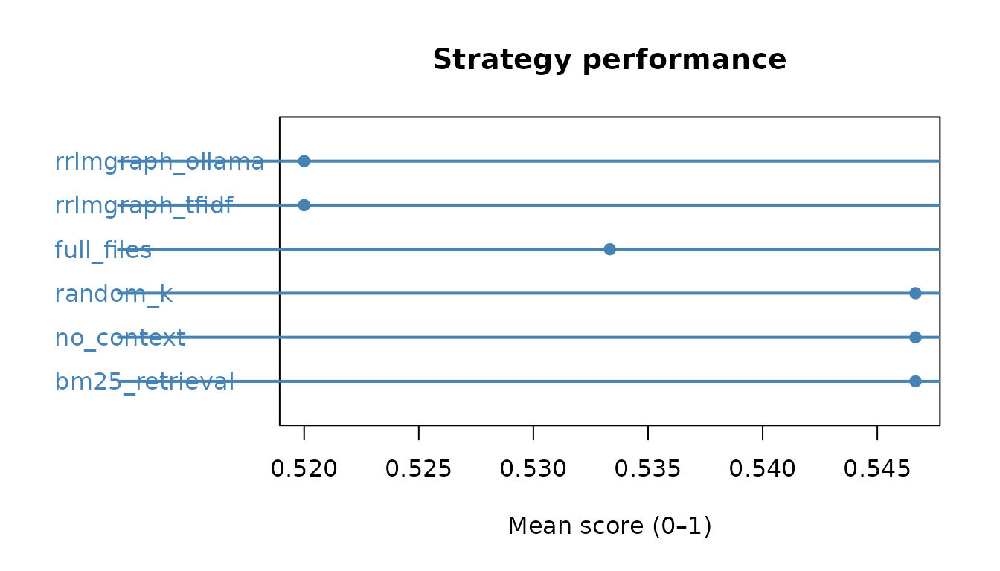
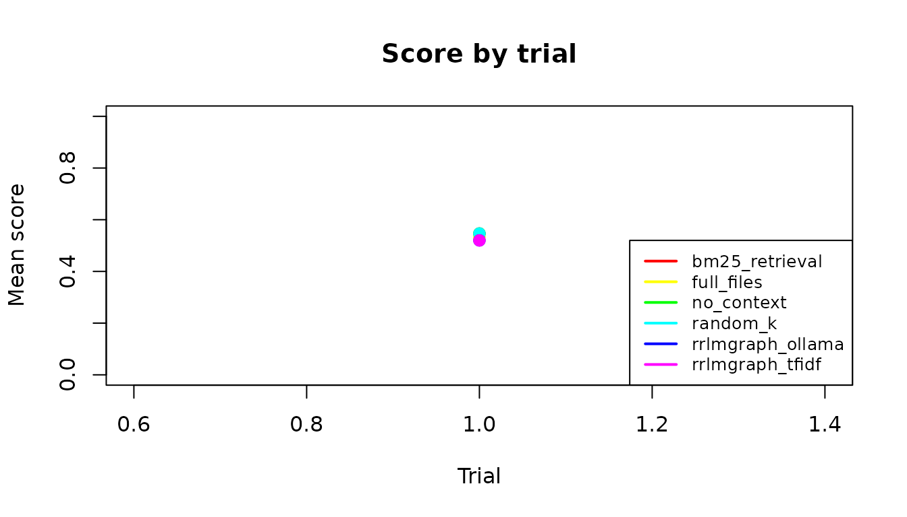

Overview
This vignette presents a reproducible benchmark comparing six retrieval strategies for providing R coding context to an LLM:
| Strategy | Description |
|---|---|
rrlmgraph_tfidf |
rrlmgraph graph traversal with TF-IDF embeddings |
rrlmgraph_ollama |
rrlmgraph graph traversal with Ollama embeddings |
full_files |
Entire source files dumped verbatim (baseline) |
bm25_retrieval |
BM25 keyword retrieval (no graph) |
no_context |
No context supplied |
random_k |
Five randomly sampled code chunks |
Results are loaded from
inst/results/benchmark_results.rds, regenerated
automatically every Monday (and on demand) by the
run-benchmark CI workflow using GitHub Models
(gpt-4o-mini).
Results
results_path <- system.file(
"results", "benchmark_results.rds",
package = "rrlmgraphbench"
)
if (!file.exists(results_path)) {
stop("benchmark_results.rds not found -- trigger the run-benchmark workflow.")
}
all_results <- readRDS(results_path)
knitr::kable(
head(all_results[, c("task_id", "strategy", "trial", "score", "total_tokens")], 6),
caption = "First 6 rows of benchmark results."
)| task_id | strategy | trial | score | total_tokens |
|---|---|---|---|---|
| task_001_fm_mini_ds | rrlmgraph_tfidf | 1 | 0.4 | 320 |
| task_001_fm_mini_ds | rrlmgraph_ollama | 1 | 0.4 | 327 |
| task_001_fm_mini_ds | full_files | 1 | 0.4 | 1585 |
| task_001_fm_mini_ds | bm25_retrieval | 1 | 0.4 | 1508 |
| task_001_fm_mini_ds | no_context | 1 | 0.4 | 252 |
| task_001_fm_mini_ds | random_k | 1 | 0.4 | 1534 |
Summary statistics
stats <- compute_benchmark_statistics(all_results)
knitr::kable(
stats$summary[, c(
"strategy", "n", "mean_score", "sd_score",
"ci_lo_95", "ci_hi_95", "mean_total_tokens", "hallucination_rate"
)],
digits = 3,
caption = "Mean score, 95 % CI, token usage, and hallucination rate per strategy."
)| strategy | n | mean_score | sd_score | ci_lo_95 | ci_hi_95 | mean_total_tokens | hallucination_rate |
|---|---|---|---|---|---|---|---|
| rrlmgraph_tfidf | 15 | 0.520 | 0.101 | 0.467 | 0.560 | 526.333 | 0 |
| rrlmgraph_ollama | 15 | 0.520 | 0.101 | 0.467 | 0.573 | 524.733 | 0 |
| full_files | 15 | 0.533 | 0.098 | 0.493 | 0.573 | 3312.333 | 0 |
| bm25_retrieval | 15 | 0.547 | 0.092 | 0.493 | 0.587 | 3121.400 | 0 |
| no_context | 15 | 0.547 | 0.092 | 0.507 | 0.587 | 41.733 | 0 |
| random_k | 15 | 0.547 | 0.092 | 0.507 | 0.587 | 3106.933 | 0 |
Score distribution
# Base-R dot chart sorted by mean score
summary_df <- stats$summary
summary_df <- summary_df[order(summary_df$mean_score, decreasing = TRUE), ]
dotchart(
summary_df$mean_score,
labels = summary_df$strategy,
xlab = "Mean score (0–1)",
main = "Strategy performance",
pch = 19,
col = "steelblue"
)
segments(
x0 = summary_df$ci_lo_95,
x1 = summary_df$ci_hi_95,
y0 = seq_len(nrow(summary_df)),
lwd = 2,
col = "steelblue"
)
Token Efficiency Ratio (TER)
TER measures score-per-token relative to the full_files
baseline. A TER > 1 means the strategy achieves a higher score per
token consumed.
ter_df <- data.frame(
strategy = names(stats$ter),
TER = round(stats$ter, 3)
)
ter_df <- ter_df[!is.na(ter_df$TER), ]
ter_df <- ter_df[order(ter_df$TER, decreasing = TRUE), ]
knitr::kable(ter_df,
row.names = FALSE,
caption = "Token Efficiency Ratio relative to full_files baseline."
)| strategy | TER |
|---|---|
| no_context | 81.353 |
| rrlmgraph_ollama | 6.155 |
| rrlmgraph_tfidf | 6.136 |
| random_k | 1.093 |
| bm25_retrieval | 1.088 |
Hallucination analysis
hall_df <- stats$summary[, c("strategy", "hallucination_rate")]
hall_df$hallucination_rate <- round(hall_df$hallucination_rate, 3)
hall_df <- hall_df[order(hall_df$hallucination_rate), ]
knitr::kable(hall_df,
row.names = FALSE,
caption = "Fraction of responses containing at least one hallucination."
)| strategy | hallucination_rate |
|---|---|
| rrlmgraph_tfidf | 0 |
| rrlmgraph_ollama | 0 |
| full_files | 0 |
| bm25_retrieval | 0 |
| no_context | 0 |
| random_k | 0 |
Hallucination type breakdown (where available):
if ("hallucination_details" %in% names(all_results)) {
details_flat <- unlist(strsplit(
all_results$hallucination_details[nzchar(all_results$hallucination_details)],
"; "
))
if (length(details_flat) > 0) {
type_pattern <- regmatches(
details_flat,
regexpr("invented_function|invalid_argument|wrong_namespace", details_flat)
)
type_counts <- sort(table(type_pattern), decreasing = TRUE)
barplot(
type_counts,
main = "Hallucination types",
ylab = "Count",
col = c("tomato", "goldenrod", "steelblue"),
names.arg = c("invented\nfunction", "invalid\nargument", "wrong\nnamespace")[
match(names(type_counts), c("invented_function", "invalid_argument", "wrong_namespace"))
]
)
} else {
message("No hallucinations detected in the loaded results.")
}
}
#> No hallucinations detected in the loaded results.Pairwise statistical tests
Welch t-tests with Bonferroni correction and Cohen’s d.
pw <- stats$pairwise
if (!is.null(pw) && nrow(pw) > 0) {
pw$sig <- ifelse(pw$p_bonferroni < 0.001, "***",
ifelse(pw$p_bonferroni < 0.01, "**",
ifelse(pw$p_bonferroni < 0.05, "*", "")
)
)
knitr::kable(
pw[, c(
"strategy_1", "strategy_2", "statistic",
"p_value_raw", "p_bonferroni", "cohens_d", "sig"
)],
digits = 4,
caption = "Pairwise Welch t-tests. * p<0.05; ** p<0.01; *** p<0.001 (Bonferroni)."
)
}| strategy_1 | strategy_2 | statistic | p_value_raw | p_bonferroni | cohens_d | sig |
|---|---|---|---|---|---|---|
| rrlmgraph_tfidf | rrlmgraph_ollama | 0.0000 | 1.0000 | 1 | 0.0000 | |
| rrlmgraph_tfidf | full_files | -0.3669 | 0.7165 | 1 | -0.1340 | |
| rrlmgraph_tfidf | bm25_retrieval | -0.7559 | 0.4561 | 1 | -0.2760 | |
| rrlmgraph_tfidf | no_context | -0.7559 | 0.4561 | 1 | -0.2760 | |
| rrlmgraph_tfidf | random_k | -0.7559 | 0.4561 | 1 | -0.2760 | |
| rrlmgraph_ollama | full_files | -0.3669 | 0.7165 | 1 | -0.1340 | |
| rrlmgraph_ollama | bm25_retrieval | -0.7559 | 0.4561 | 1 | -0.2760 | |
| rrlmgraph_ollama | no_context | -0.7559 | 0.4561 | 1 | -0.2760 | |
| rrlmgraph_ollama | random_k | -0.7559 | 0.4561 | 1 | -0.2760 | |
| full_files | bm25_retrieval | -0.3859 | 0.7025 | 1 | -0.1409 | |
| full_files | no_context | -0.3859 | 0.7025 | 1 | -0.1409 | |
| full_files | random_k | -0.3859 | 0.7025 | 1 | -0.1409 | |
| bm25_retrieval | no_context | 0.0000 | 1.0000 | 1 | 0.0000 | |
| bm25_retrieval | random_k | 0.0000 | 1.0000 | 1 | 0.0000 | |
| no_context | random_k | 0.0000 | 1.0000 | 1 | 0.0000 |
Per-project breakdown
if ("task_id" %in% names(all_results)) {
# Infer project from task_id (e.g. task_001_fm_mini_ds → mini_ds)
all_results$project <- sub(
".*_(mini_ds|shiny|rpkg).*", "\\1",
all_results$task_id
)
proj_summary <- aggregate(
score ~ strategy + project,
data = all_results,
FUN = mean
)
proj_wide <- reshape(
proj_summary,
idvar = "strategy",
timevar = "project",
direction = "wide"
)
names(proj_wide) <- gsub("score\\.", "", names(proj_wide))
knitr::kable(
proj_wide,
digits = 3,
caption = "Mean score disaggregated by fixture project."
)
}| strategy | mini_ds | rpkg | shiny |
|---|---|---|---|
| bm25_retrieval | 0.56 | 0.56 | 0.52 |
| full_files | 0.52 | 0.56 | 0.52 |
| no_context | 0.56 | 0.56 | 0.52 |
| random_k | 0.56 | 0.56 | 0.52 |
| rrlmgraph_ollama | 0.52 | 0.52 | 0.52 |
| rrlmgraph_tfidf | 0.52 | 0.52 | 0.52 |
Recursive-improvement trajectory
If multi-trial results are available, this plot shows whether score improves across successive trials (a proxy for benefit from context).
if ("trial" %in% names(all_results)) {
trial_means <- aggregate(score ~ strategy + trial,
data = all_results, FUN = mean
)
strategies <- unique(trial_means$strategy)
cols <- rainbow(length(strategies))
plot(
range(trial_means$trial), c(0, 1),
type = "n",
xlab = "Trial", ylab = "Mean score",
main = "Score by trial"
)
for (i in seq_along(strategies)) {
sub <- trial_means[trial_means$strategy == strategies[i], ]
lines(sub$trial, sub$score, col = cols[i], lwd = 2, type = "b", pch = 19)
}
legend("bottomright", legend = strategies, col = cols, lwd = 2, cex = 0.8)
}
Session info
sessionInfo()
#> R version 4.5.2 (2025-10-31)
#> Platform: x86_64-pc-linux-gnu
#> Running under: Ubuntu 24.04.3 LTS
#>
#> Matrix products: default
#> BLAS: /usr/lib/x86_64-linux-gnu/openblas-pthread/libblas.so.3
#> LAPACK: /usr/lib/x86_64-linux-gnu/openblas-pthread/libopenblasp-r0.3.26.so; LAPACK version 3.12.0
#>
#> locale:
#> [1] LC_CTYPE=C.UTF-8 LC_NUMERIC=C LC_TIME=C.UTF-8
#> [4] LC_COLLATE=C.UTF-8 LC_MONETARY=C.UTF-8 LC_MESSAGES=C.UTF-8
#> [7] LC_PAPER=C.UTF-8 LC_NAME=C LC_ADDRESS=C
#> [10] LC_TELEPHONE=C LC_MEASUREMENT=C.UTF-8 LC_IDENTIFICATION=C
#>
#> time zone: UTC
#> tzcode source: system (glibc)
#>
#> attached base packages:
#> [1] stats graphics grDevices utils datasets methods base
#>
#> other attached packages:
#> [1] rrlmgraphbench_0.1.0
#>
#> loaded via a namespace (and not attached):
#> [1] digest_0.6.39 desc_1.4.3 R6_2.6.1 fastmap_1.2.0
#> [5] xfun_0.56 cachem_1.1.0 knitr_1.51 htmltools_0.5.9
#> [9] rmarkdown_2.30 lifecycle_1.0.5 cli_3.6.5 sass_0.4.10
#> [13] pkgdown_2.2.0 textshaping_1.0.4 jquerylib_0.1.4 systemfonts_1.3.1
#> [17] compiler_4.5.2 tools_4.5.2 ragg_1.5.0 bslib_0.10.0
#> [21] evaluate_1.0.5 yaml_2.3.12 otel_0.2.0 jsonlite_2.0.0
#> [25] rlang_1.1.7 fs_1.6.6 htmlwidgets_1.6.4